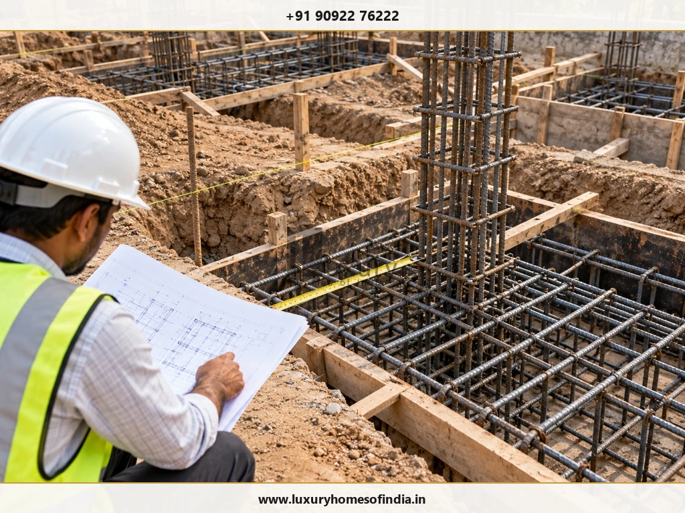
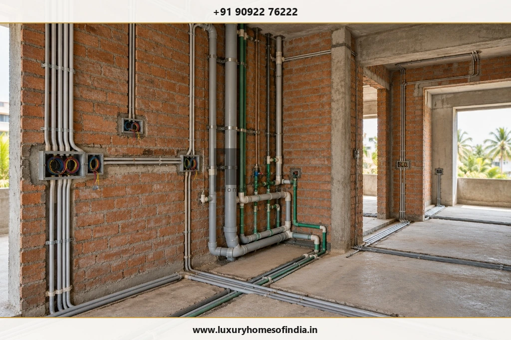
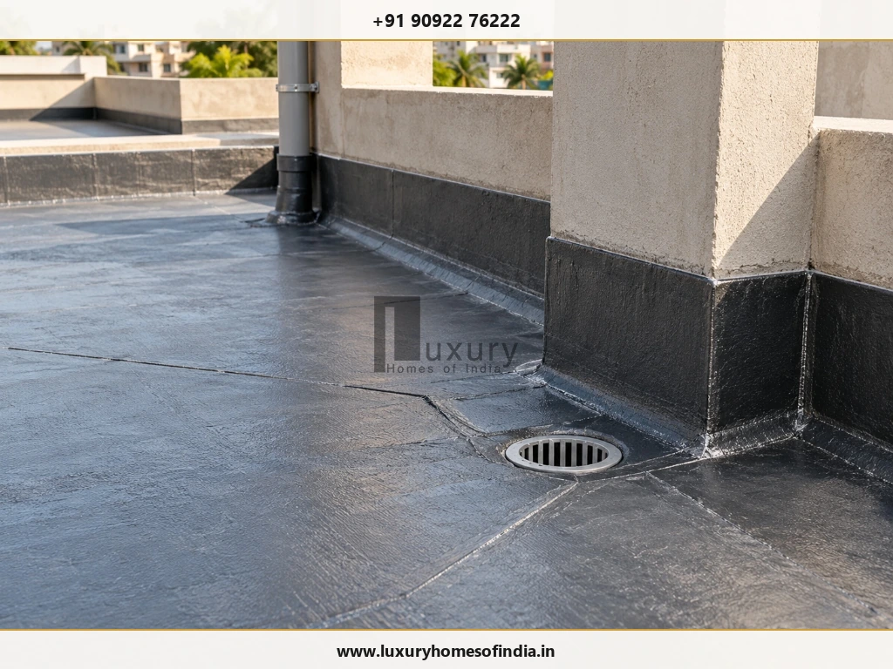

House Construction Process Step by Step: From Plot to Handover
Building a house involves more than completing foundation work, raising walls and choosing finishes. The house construction process step by step begins with plot assessment and design, continues through approvals, structural construction and building services, and ends with testing, inspection and handover. Each stage must be coordinated with the drawings, site conditions, specifications and applicable requirements. For homeowners in Chennai, early planning should also account for local approval procedures, rainwater management, ventilation, material selection and the scope of the construction agreement. Understanding what happens at each stage helps homeowners ask better questions, review important decisions and identify work that needs inspection before it is concealed or covered by finishes. The right sequence varies with the design, number of floors, structural system and project scope, so this guide is a planning resource rather than a substitute for project-specific professional advice.

The House Construction Process at a Glance
A typical independent house project follows the sequence below, with some activities overlapping when the approved design and site conditions allow.
| Stage | Main Objective |
|---|---|
| 1. Plot assessment | Understand the land, boundaries, access and constraints. |
| 2. Requirements and budget | Define the home, priorities and financial scope. |
| 3. Architectural design | Coordinate layout, circulation, light and function. |
| 4. Structural and services design | Plan the building structure and technical systems. |
| 5. Approvals | Confirm the required permissions before commencing work. |
| 6. Contractor and agreement | Define scope, specifications, responsibilities and milestones. |
| 7. Site preparation | Check levels, access and building setting-out. |
| 8. Foundation and plinth | Execute the designed foundation system. |
| 9. Structural frame | Construct the specified columns, beams, slabs and staircase. |
| 10. Masonry and services | Coordinate walls with concealed installations. |
| 11. Waterproofing and finishes | Complete tested protection systems and specified finishes. |
| 12. Testing and handover | Inspect the work, resolve defects and collect records. |
The exact sequence depends on the construction method and the project documents. The structural engineer and other responsible professionals should determine the appropriate technical sequence.
Stage-by-Stage Construction Guide
1. Assess the Plot Before Designing the House
The plot establishes the physical and regulatory constraints within which the house must be designed.
Before finalising a floor plan, arrange for appropriate checks of the property boundaries, dimensions, access, site levels, relevant records and surrounding conditions. Depending on the property, further site investigation may be needed to understand ground conditions and inform foundation design.
For a Chennai property, the planning exercise should also consider rainwater drainage, neighbouring development, solar exposure and the applicable building restrictions.
Check Before Proceeding
Confirm that the measured site and available property records are consistent with the information used for design. Resolve discrepancies with the relevant professionals before fixing the layout.
2. Define Your Requirements and Establish the Budget
List the rooms, spaces and features the house needs now, as well as any important future requirements.
Consider bedrooms, bathrooms, parking, storage, kitchen arrangements, accessibility, outdoor spaces and family routines. A luxury home may also require planning for fixed interiors, home automation, air-conditioning, lifts or specialist lighting, depending on the intended scope.
Prepare a budget that distinguishes the core construction from the complete project.
| Budget Category | Items to Consider |
|---|---|
| Design and engineering | Architectural, structural and relevant specialist services |
| Main construction | Foundation, structural work, masonry and plastering |
| Building services | Electrical, plumbing, drainage and specified equipment |
| Finishes | Flooring, painting, doors, windows and fittings |
| Interiors | Kitchen, wardrobes and fixed joinery, if included |
| External works | Site drainage, paving, boundary works and landscaping |
| Approvals and connections | Applicable statutory charges and utility expenses |
| Contingency | A reserve for unforeseen conditions and approved changes |
The exact inclusions depend on the contract. A quotation for civil construction may not cover every item required for a fully fitted, move-in-ready home.
Check Before Proceeding
Ask for a written scope that separates inclusions, exclusions, provisional allowances and items to be selected later.
3. Develop the Architectural Design
Architectural design turns the homeowner's requirements and plot constraints into a coordinated layout.
The design may cover room arrangements, circulation, staircase placement, openings, elevations, storage, furniture clearances, kitchen planning and bathroom layouts.
For Chennai homes, consider shading, daylight, ventilation, rainwater management and moisture exposure during design rather than leaving these decisions until construction.
Design changes are usually easier to coordinate before dependent work begins. A kitchen revision made during design, for example, can be reflected in service layouts before conduits, pipes and finishes are installed.
Check Before Proceeding
Review the latest floor plans, elevations, opening positions and key dimensions. Ensure that the drawings reflect the decisions that the construction team is expected to follow.
4. Coordinate Structural and Building Services Drawings
Architectural drawings do not replace the technical information needed to construct the building.
Depending on the project, the coordinated documentation may include:
- Foundation and structural drawings.
- Reinforcement and concrete details.
- Staircase and other structural details.
- Electrical and lighting layouts.
- Water-supply and drainage layouts.
- Air-conditioning provisions.
- Water storage and pumping arrangements.
- Lift, data, security or automation provisions, where applicable.
The current applicable standards and regulatory requirements must be checked by the responsible professionals. The Bureau of Indian Standards' National Building Code publications provide a relevant national framework, but project-specific requirements must be established for the actual building.
Check Before Proceeding
Resolve conflicts between architecture, structure and services before the affected work begins. Do not treat a sketch or an outdated drawing as the current construction instruction.
5. Obtain the Required Approvals
Before construction begins, establish which authority and approval process apply to the specific property and proposed building.
For Chennai, the applicable route can depend on the site's jurisdiction and the building category. Start with the official Greater Chennai Corporation town-planning portal and the CMDA planning-permission portal, then confirm the correct route with the responsible registered professional or relevant authority.
The process may involve checking property documentation, preparing drawings, submitting an application, responding to queries and obtaining the required permission.
Do not assume that submitting an application means permission has been granted.
Check Before Proceeding
Keep the applicable approval documents and confirm that the permissions required for the proposed work are in place.
For related reading, see our comprehensive guide to building plan approval in Chennai, covering required documents, fees, and statutory timelines.
6. Select the Construction Partner and Finalise the Agreement
The construction arrangement should match the homeowner's desired level of involvement and the project's scope.
A turnkey agreement, labour contract or other delivery arrangement can allocate responsibilities differently. The important point is to define those responsibilities in writing.
Review the scope of work, bill of quantities (BOQ), material specifications, procurement responsibilities, payment milestones, schedule, change-order process, quality checks and handover obligations.
Check Before Proceeding
Compare proposals on equivalent specifications and inclusions, rather than choosing solely on a quoted per-square-foot rate.
See also our detailed breakdown on what is turnkey construction in Chennai, clarifying core packages versus complete fit-outs.
7. Prepare the Site and Set Out the Building
Site preparation establishes the conditions for the first major construction activities.
Depending on the property, work may include clearing debris, organising access, reviewing levels, setting out the building and marking the foundation positions according to the relevant drawings.
Measurements and reference points should be checked before substantial excavation begins.
Check Before Proceeding
Have the setting-out dimensions verified by the responsible professional. Resolve discrepancies before proceeding with foundation work.
8. Complete Excavation, Foundation and Plinth Work
The foundation transfers building loads to the ground. Its form and dimensions must follow the structural design and the relevant site conditions.
The work may involve excavation, preparation of the foundation bed, reinforcement, formwork where applicable, concrete placement, backfilling, compaction and plinth construction.
The appropriate method depends on the design; not every building uses the same foundation system.
Check Before Proceeding
- Confirm the excavation dimensions and observed ground conditions.
- Arrange the specified inspections before concrete placement.
- Check reinforcement and formwork against the approved drawings.
- Follow the specified concrete placement and curing procedures.
- Verify plinth levels and required damp-protection details.
- Do not change the foundation design or improvise a response to unexpected ground conditions without the responsible engineer's direction.

9. Construct the Structural Frame
Where the design uses a reinforced-concrete frame, structural work may include columns, beams, slabs and the staircase.
Reinforcement, formwork, inspections, concrete placement, curing and formwork removal must follow the structural design and applicable technical requirements. Multi-floor construction also requires a coordinated sequence between floors.
Check Before Proceeding
Verify the specified reinforcement, embedded items, openings and relevant inspections before concrete is placed. Follow the responsible engineer's instructions for curing and formwork removal. Structural work is not an appropriate place to make unapproved substitutions or shortcuts.
10. Build Walls and Coordinate Concealed Services
Masonry establishes the external walls, internal partitions and openings. It must align with the latest architectural drawings and accommodate the planned building services.
Electrical conduits, water-supply pipes, drainage lines and other concealed installations should be coordinated with the wall and floor construction.
The precise installation sequence varies by system and construction method. Some work may occur before, during or after particular masonry activities.
Check Before Proceeding
- Verify wall alignment and opening dimensions.
- Confirm service locations against the coordinated drawings.
- Complete the specified inspections and tests before installations are concealed.
- Record important concealed routes for future maintenance.

11. Complete Plastering and Surface Preparation
Plastering prepares surfaces for their specified finish. Internal and external wall treatments should follow the project specification and the needs of the underlying substrate.
Before closing surfaces, coordinate the work with concealed installations and required inspections.
Check Before Proceeding
Review surface alignment, corners, openings and visible defects. Follow the specified preparation and curing requirements before applying subsequent finishes.
12. Waterproof and Test Vulnerable Areas
Waterproofing may be required at terraces, balconies, bathrooms, utility areas and other locations identified by the design.
The selected system, substrate preparation, detailing and testing requirements depend on the area and specification. The relevant tests should be completed before dependent finishes cover the work.
Check Before Proceeding
Record the waterproofing system used, review critical junctions and document the required testing results before tiling or installing other finishes.

13. Install Flooring, Doors, Windows and Finishes
Finishing work may include tiles, natural stone or other specified flooring, door frames, shutters, windows, glazing, handrails, hardware and painting.
The installation order depends on the materials and methods used, including how completed surfaces will be protected.
Custom finishes and made-to-measure components should be planned early enough to coordinate specifications, procurement and site readiness.
Check Before Proceeding
Confirm the selected products, sizes, finishes and installation details against the approved schedule. Inspect completed work before it becomes difficult to access or repair.
14. Install Fixtures and Interior Elements
Depending on the agreed scope, this stage may include sanitaryware, electrical fittings, kitchen components, wardrobes, fixed furniture, lighting and specialist equipment.
The installed products should match the agreed specification, and the underlying surfaces and connections should be ready for installation.
Check Before Proceeding
Verify the selected products and relevant installation requirements. Test operating components and record defects before accepting the work.
15. Test the Systems and Complete the Final Inspection
Before handover, review the completed house against the contract, drawings, product schedules and applicable close-out requirements.
A practical inspection can include:
- Water supply, drainage and pumping operation.
- Relevant electrical and safety checks by qualified personnel.
- Doors, windows, hardware and locks.
- Visible signs of leakage or moisture damage.
- Flooring, painting, joinery and fixtures.
- Agreed external works.
- Outstanding contracted items.
- Required inspection and completion documents.
Create a written snag list identifying each defect, its location, the responsible party and the agreed correction date.
Check Before Proceeding
Keep a record of completed checks and outstanding items rather than relying on verbal assurances.
16. Complete Handover and Prepare for Occupancy
Handover should include the agreed work, the applicable formalities and the relevant records required for the particular project.
Depending on the contract and building, these may include approved drawings, permits, inspection records, equipment manuals, warranties, product information, keys, access details and records of outstanding corrections.
Confirm which completion or close-out documents apply to the property. Requirements should not be assumed to be identical for every building.
Check Before Proceeding
Use a written handover checklist and ensure the agreed deliverables and required formalities have been addressed before treating the project as complete.
How Long Does the House Construction Process Take?
The construction timeline depends on the size and complexity of the house, design finalisation, approvals, site conditions, procurement, construction method, workforce coordination and finishing scope.
Rather than relying on a universal duration, ask for a project-specific schedule covering:
- Design and approval milestones.
- Procurement and long-lead items.
- Site preparation and foundation.
- Structural construction.
- Masonry and coordinated services.
- Waterproofing and finishing.
- Testing, snag correction and handover.
Some activities can overlap; others depend on inspections, curing, deliveries or the completion of earlier work. Any estimated duration should therefore be labelled as a planning estimate and supported by the actual project scope and assumptions.
For realistic timeframes in Tamil Nadu, read our in-depth analysis on how long it takes to build a house in Chennai.
Common Mistakes to Avoid
Homeowners can reduce avoidable rework by addressing these issues early:
- Starting work without confirming the required permissions: Breaking ground without statutory approvals leads to work stoppages and regulatory complications.
- Using incomplete or outdated construction drawings: Relying on preliminary sketches causes costly on-site structural and plumbing clashes.
- Underestimating the complete project scope: Omitting site development, utility hook-ups, compound walls, or interior joinery from early budgets.
- Making repeated design changes after dependent work is completed: Moving partitions or plumbing outlets after masonry or conduit casting is underway.
- Ordering custom materials too late: High-end stones, specialised tiles, imported fixtures, and custom joinery need early procurement scheduling.
- Concealing services before required checks: Closing conduits and piping into masonry without pressure testing and continuity inspections.
- Covering waterproofing before specified tests: Laying tiles before completing mandatory 48-to-72 hour ponding tests.
- Making unapproved structural changes: Modifying beam depths, column placements, or rebar distributions without structural engineering sign-off.
- Releasing payments without verifying the agreed milestone: Disbursing funds without independent verification of physical completion and quality.
- Accepting handover without recording outstanding defects: Accepting possession on verbal assurances without a comprehensive signed snag sheet.
A clear agreement, coordinated drawings, appropriate inspections and documented decisions are practical safeguards throughout the project.
Frequently Asked Questions
What is the first step in house construction?
Start by assessing the plot, checking the relevant property records, defining your requirements and establishing a realistic budget. These steps inform the design and approval process.
Can construction start before building approval?
Do not assume that permission will be granted after work begins. Confirm the permissions required for the specific property and proposed building before commencing work.
What is the correct sequence of house construction?
A typical sequence covers plot assessment, design, engineering, approvals, contractor selection, site preparation, foundation, structural work, masonry, services, waterproofing, finishes, inspection and handover. The precise order depends on the approved design and construction method.
When should electrical and plumbing work be planned?
Plan the layouts during design and coordinate installation with the relevant construction stages. Complete required inspections and tests before concealing the installations.
When should tiles, doors and sanitaryware be selected?
Select them early enough to coordinate dimensions, specifications, allowances and delivery. Custom or long-lead items need particular attention in the procurement schedule.
Is turnkey construction suitable for an independent house?
It may suit homeowners who want one primary contractor to coordinate the work included in the agreement. Review the scope, exclusions, specifications, payment terms and handover responsibilities before signing.
What should homeowners check before handover?
Inspect the completed work against the agreed scope, verify relevant systems, document defects and collect the applicable records, manuals and warranties.
Plan the Construction Process Before Work Begins
A well-managed house construction process depends on coordinated decisions, a clear scope and appropriate checks at each stage. Plot assessment, design, approvals, structural work, building services, waterproofing, finishing and handover all contribute to the finished home's function and long-term performance.
For a home in Chennai, begin by understanding the property, confirming the relevant approval route and preparing coordinated drawings and a written construction scope. Use qualified professionals to address project-specific technical requirements.
Discuss Your Home Construction Requirements with LHI
If you are considering an independent house, duplex or luxury residence in Chennai, first define the needs of your property and the scope of work you want to undertake. Confirm the appropriate LHI services and project arrangements directly before relying on them in your planning.
Website: https://luxuryhomesofindia.in/
Phone: +91 90922 76222
Email: info@luxuryhomesofindia.in
Corporate Office: #85, 4th Floor, Lotus Tower, Guindy, Chennai – 600032
Disclaimer: This article is for general educational purposes. Technical requirements, construction methods, approvals, specifications and schedules vary by project. Confirm current requirements with the relevant authority and qualified professionals before commencing work.
Written by: LHI Editorial Team
Reviewed by: LHI In-House Technical Team